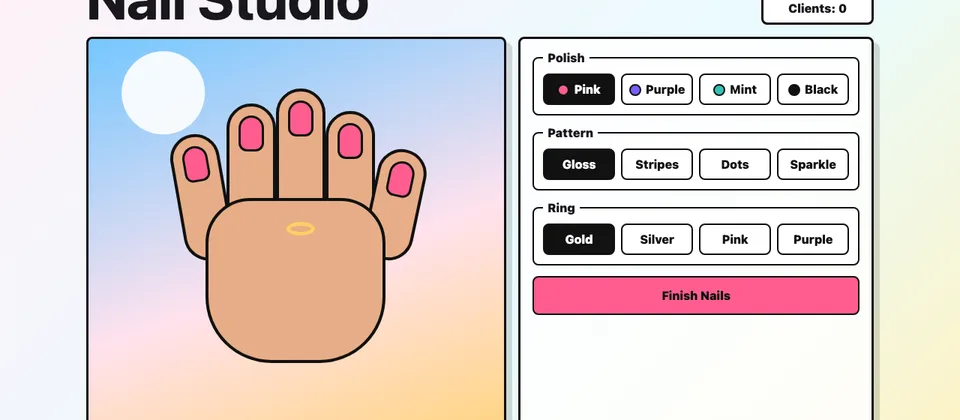

Start with color
Pick the polish first, then choose a pattern that still looks clear.
Nail Studio
Nail Studio lets you pick polish colors, patterns, and rings. Make a set, finish it, then try a new combo.
Play Nail Studio
Basics
Plan
Pick the polish first, then choose a pattern that still looks clear.
Dark polish with sparkle or bright polish with dots is easy to see.
Press Finish Nails after each design to build up the client counter.